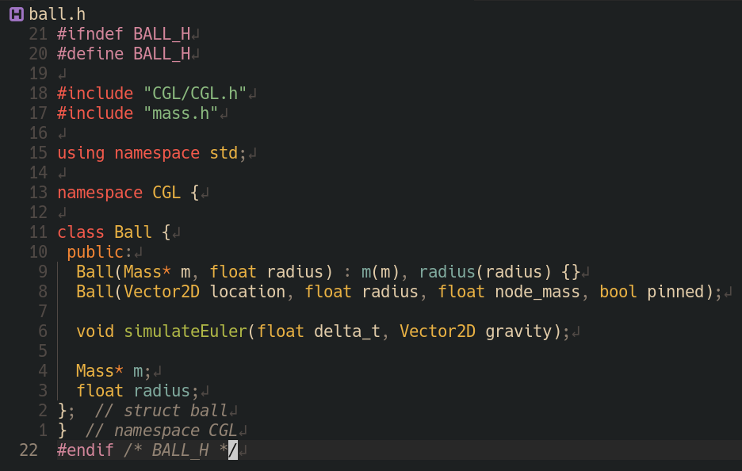
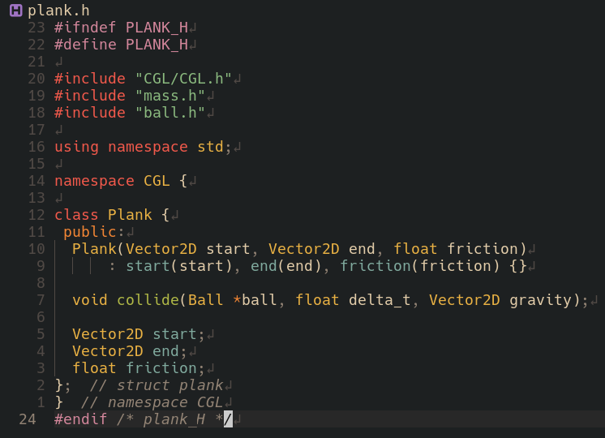
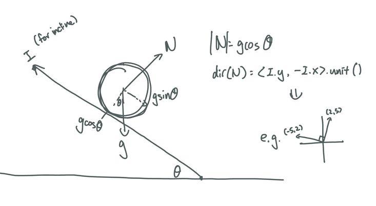
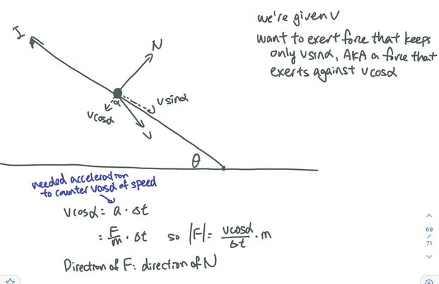

For this project, we want to simulate the kinematics of a ball colliding with and rolling down surfaces.
Data Structures:
We’ve created new classes for the Ball and Plank objects. The Mass struct, which we inherited from discussion, contains a position, last_position (from the last time step), mass (of the object), and whether or not the object is pinned. The Ball class contains a Mass struct to store position information, as well as fields to store the Ball’s mass and radius. The Plank class stores the two endpoints of each plank, as well as a friction coefficient for balls rolling down the plank.
|

|

|
Physics:
Our ball moves under a simulateEuler() function, which applies the total external forces on the ball to move the ball to its next position. When free-falling, the ball is acted upon by a downwards gravitational force. To detect a collision between a ball and a plank, we model each plank as a ray, with two endpoints and a direction. We define the equation of the plank as a ray using its endpoints and direction, and the equation of the ball as a circle using the ball’s radius and center position. Setting the two equations equal to each other, we can solve a quadratic equation to figure out whether or not there is an intersection, and where the intersection point is.
To simulate the motion of a ball rolling down a plank, we first calculate the total force exerted by the plank on the ball: the normal force exerted on any stationary ball, and an extra reactionary force to the ball’s existing velocity upon collision with the plank. The normal force has magnitude |gravity| * cos(theta), and points in the same direction as the normal to the plank. The reactionary force is calculated to cancel out the component of velocity perpendicular to the plank, and has the same direction and a magnitude of |velocity| * cos(alpha) * mass / delta_t. Given a new total force exerted on the ball, we calculate a new velocity vector for the ball, and update the ball’s position based on the new velocity.
|

|

|
Preliminary Results:
As seen in the image below, we have four different planks drawn out in different colors, as well as a ball object. The ball initially lands on the blue plank, rolls down to the green plank, rolls down to the red plank, and comes to rest on the yellow plank. We are able to simulate the free fall, rolling, and plank collision kinematics for this animation.
Preliminary Results:
We’ve completed roughly the first two weeks’ items in our initial work plan. We created several angled planks and a final horizontal plank, and are able to drop a circular ball to roll down the combination of planks. A modification we might make to our initial work plan is to spend more time cleaning up the kinematics to make sure we’re simulating all forces correctly, as well as on the rendering graphics to make our planks and balls look better. Our stretch goal remains to add additional game features and parameters for different objects in the animation.